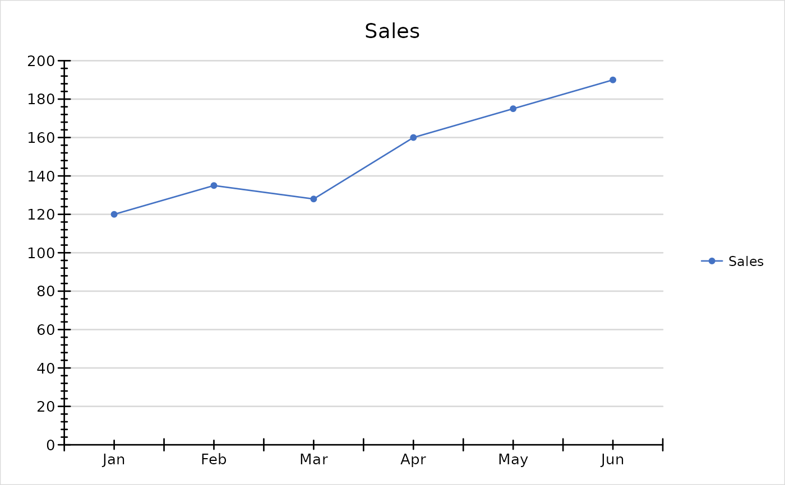

Draws a Chart or ChartEx object on the current graphics device with
grid, approximating what a spreadsheet application shows for it.
Supported are bar/column (clustered, stacked, percent stacked, horizontal), line, area, scatter, bubble, pie, doughnut and radar charts with titles, primary and secondary axes, gridlines, legend, markers, line styles, data labels, trendlines and error bars, and the extended types waterfall, box-and-whisker, histogram, Pareto, funnel, treemap and sunburst. 3D, stock, surface, pie-of-pie and region map charts are not drawn.
Arguments
- x
A
ChartorChartExobject.- wb
Optional
wbWorkbookthe series reference.- newpage
Call
grid::grid.newpage()first. DefaultTRUE.- ...
Ignored.
Details
The values come from the series caches (present when a series was added
from wb_data()) or are read from wb. Series added with plain range
strings and all ChartEx objects need wb.
Axis scaling follows Excel's rules for automatic axes; fonts, spacing and
the exact placement of labels differ from Excel. Number formats are
approximated for common codes (0, 0.00, #,##0, 0%, date formats).
Examples
wb <- openxlsx2::wb_workbook()$add_worksheet("Data")$add_data(x = data.frame(
Month = month.abb[1:6], Sales = c(120, 135, 128, 160, 175, 190)
))
chart <- ec("line")$set_chart_title("Sales")$
add_series(name = Sales, data = openxlsx2::wb_data(wb), label = Month, marker = "circle")
plot(chart)
